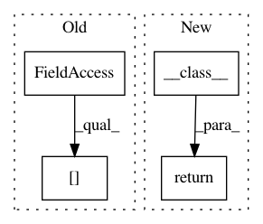

725fdaf504237190f6787dda3d72c39010a4c574,src/python/pants/engine/collection.py,Collection,__getitem__,#Collection#Any#,37
Before Change
def __getitem__(self, index: Union[int, slice]) -> Union[T, "Collection[T]"]: // noqa: F811
if isinstance(index, int):
return self.dependencies[index]
return self.__class__(self.dependencies[index])
def __len__(self) -> int:
return len(self.dependencies)
After Change
result = super().__getitem__(index)
if isinstance(index, int):
return cast(T, result)
return self.__class__(cast(Tuple[T, ...], result))
def __eq__(self, other: Any) -> bool:
return type(self) == type(other) and super().__eq__(other)
In pattern: SUPERPATTERN
Frequency: 3
Non-data size: 4
Instances
Project Name: pantsbuild/pants
Commit Name: 725fdaf504237190f6787dda3d72c39010a4c574
Time: 2020-07-26
Author: john.sirois@gmail.com
File Name: src/python/pants/engine/collection.py
Class Name: Collection
Method Name: __getitem__
Project Name: cornellius-gp/gpytorch
Commit Name: e95aef6716ee8b2e0b647468ffe7f5bf37d4ce47
Time: 2019-03-18
Author: gpleiss@gmail.com
File Name: gpytorch/lazy/mul_lazy_tensor.py
Class Name: MulLazyTensor
Method Name: _mul_constant
Project Name: openai/baselines
Commit Name: 4dc697e670aecc5b9ef540ef95c175258f5da59e
Time: 2018-09-14
Author: peterzhokhoff@gmail.com
File Name: baselines/common/distributions.py
Class Name: DiagGaussianPd
Method Name: __getitem__